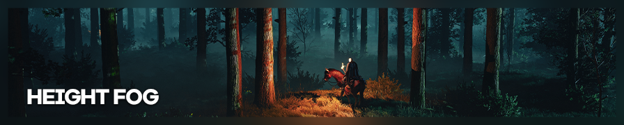
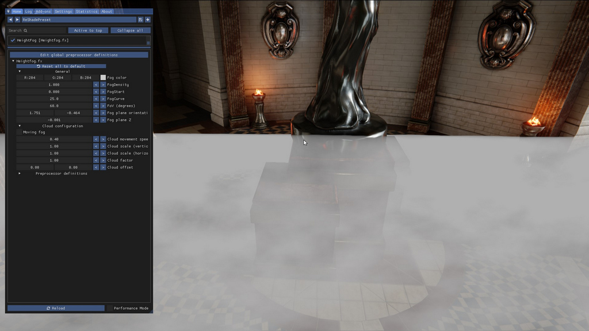
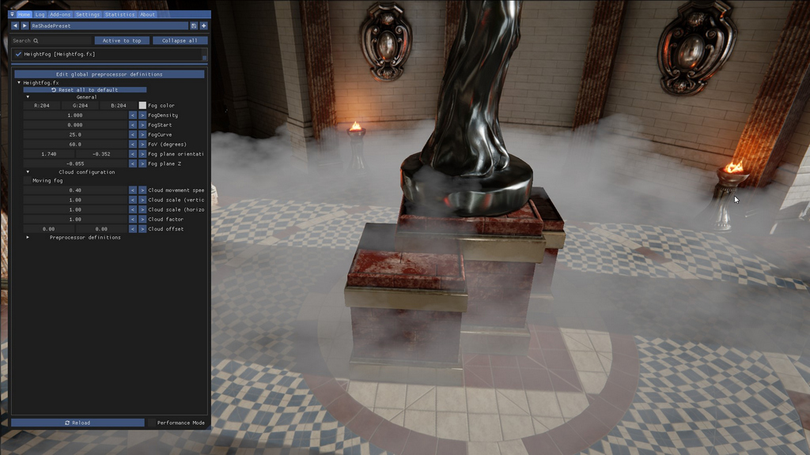
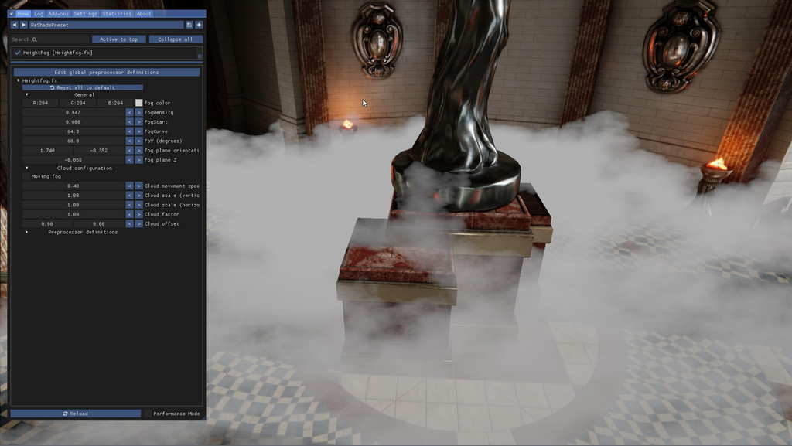
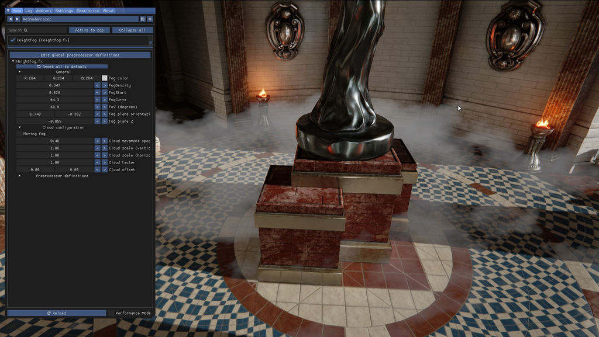
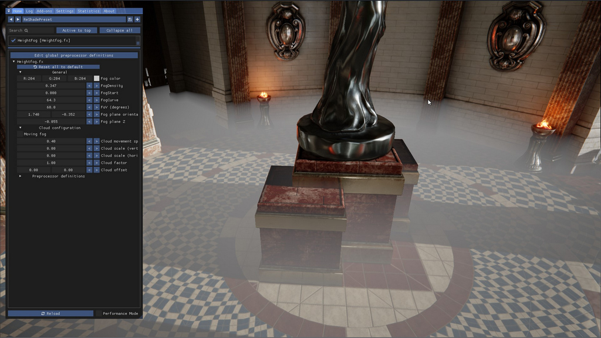
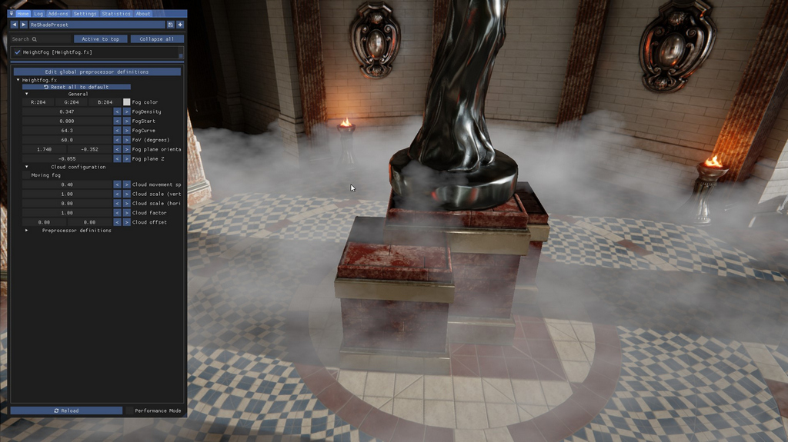
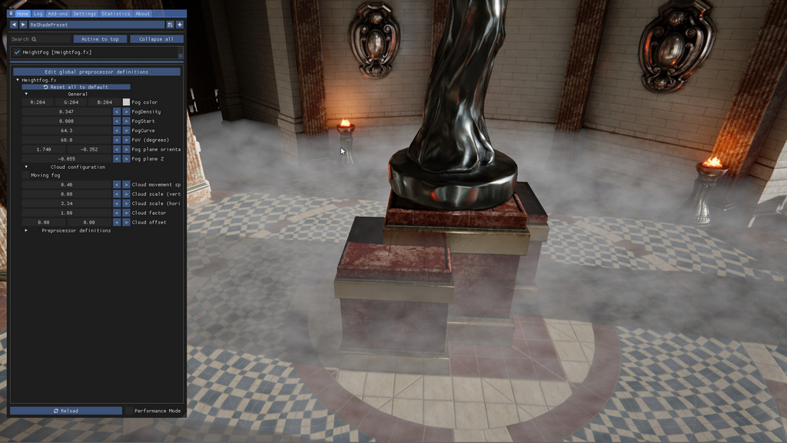

由 Jim2point0 拍摄
"高度雾"着色器是一款为 ReShade 设计的着色器，用于创建高度雾/体积雾效果，可在 OtisFX 仓库中获取。OtisFX 仓库始终包含最新版本。高度雾由 Marty McFly 和 Otis_Inf 共同编写。
本指南假设你已在 ReShade 中正确配置了深度缓冲。高度雾是一款在游戏 3D 世界中插入一个无限大平面并在该平面上应用雾效的着色器。本指南将介绍如何控制这个平面，以在你的场景中营造大气雾效。
需要注意的是，高度雾着色器对你的 3D 场景中的上/下/左/右方向毫无概念，它所知道的只是摄像机正在观察的场景。这意味着当你在 ReShade 覆盖层中启用该着色器时，高度雾是相对于摄像机的——当你移动摄像机时，高度雾也会随之移动。
因此，它对于视频拍摄的用处并不大。
对齐雾效
默认设置效果如下：

高度雾的默认设置效果
初看可能有些奇怪，但请记住，雾效是相对于摄像机的，它不知道上下方向，因此也不知道摄像机是以一定角度俯视场景的。不过，高度雾的控制参数允许你旋转和移动雾效平面，使其看起来像是漂浮在我们正在观看的神殿地板上。
雾效平面 Z 值
首先需要调整的参数是 Fog Plane Z（雾效平面 Z 值）。要向下移动雾效，需要将该值调小（即更负）。默认值为 -0.001，若将其调小至 -0.021，雾效会向下移动（仍然是相对于摄像机！），同时雾层顶部空间增大，雾效也会变得更为蓬松。
不断向下调整 Z 值并不总是有效。特别是在我们上面的示例中，由于是以一定角度俯视地板，因此需要旋转雾效平面。
雾效平面朝向
要旋转雾效元素，可以使用 Fog plane orientation（雾效平面朝向）设置中的两个值。第一个值是"滚转"值，使雾效图层沿摄像机的观察方向旋转；第二个值是"俯仰"值，基本上使雾效平面沿水平轴旋转。
在上面的示例中，如果我们稍微降低 Z 值，然后调整第二个朝向值（俯仰），就可以将雾效图层与地板对齐，效果如下所示：

雾效图层与地板对齐的效果
另一个可能需要调整的参数是 FoV（视野）值。默认设置为 60，但如果你使用的是非常宽的窗口，可能需要稍作调整，以使平面朝向参数能够更准确地对齐。
调整雾效
颜色
要更改雾效的颜色，调整 Fog color（雾效颜色）参数即可，操作非常直观。
密度控制
将雾效与地板对齐后，就可以进行微调了。相关参数为 Fog density（雾效密度）、Fog start（雾效起始距离）和 Fog curve（雾效曲线）。这三个参数共同控制场景中雾效的厚度。着色器会根据这些值计算厚度，因此观察的雾效越多，其表现就越厚。雾效密度和雾效曲线本质上控制的是同一事物，但雾效密度对雾效曲线值提供了更精细的控制。雾效起始距离定义了雾效从摄像机开始出现的距离，0.0 表示摄像机处，1.0 表示地平线处。
以下是一种浓雾效果

浓雾变体效果
以下是相同的雾效设置，但降低了密度并将起始距离设置得更远。

起始距离更远的薄雾变体效果
云层控制
高度雾使用雾效纹理来创造蓬松的云雾效果。你可以通过 Cloud configuration（云层配置）下的参数来控制云雾效果。勾选 Moving fog（流动雾效）复选框将使雾效缓慢移动，你可以通过调整 Cloud movement speed（云层移动速度）来控制速度。
雾效的蓬松/云状效果有两个参数：Cloud scale (vertical)（云层比例·垂直）和 Cloud scale (horizontal)（云层比例·水平）。垂直值控制云层的"波动"程度，值越高越波动。水平值控制雾效图层在水平方向上的变化。两者结合，你可以创造出场景所需的独特雾效。以下是几组示例。
首先，水平和垂直比例系数均为 0：

水平和垂直云层系数均为 0
将垂直比例值设为 1，水平保持 0：

垂直云层系数为 1
将垂直比例值设为 0，水平设为 3：

水平云层系数为 3
当云层值较高时，云层元素可能会出现在不理想的位置。你可以通过调整云层偏移值来移动云层在 X 轴或 Y 轴上的位置。